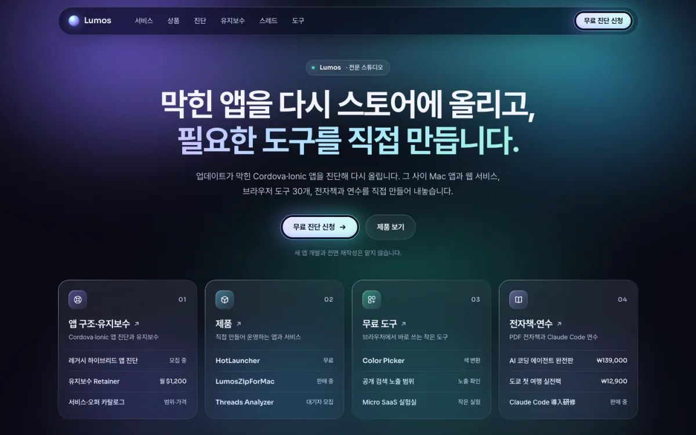
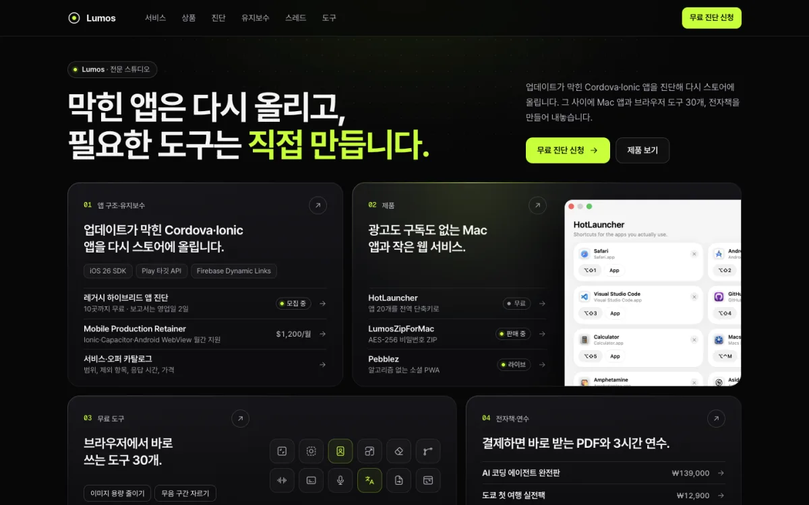
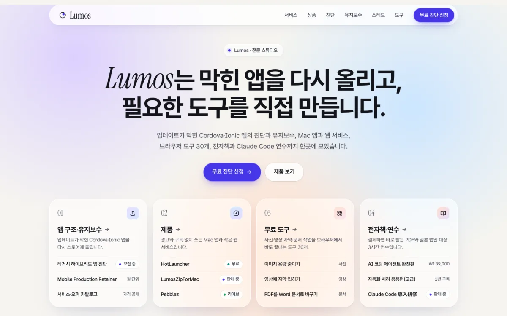
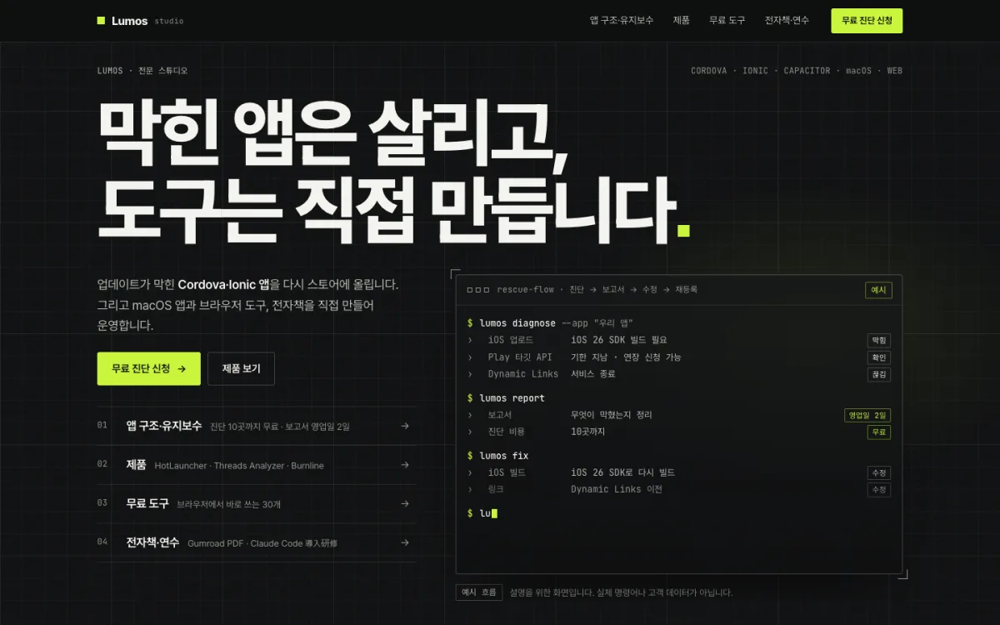
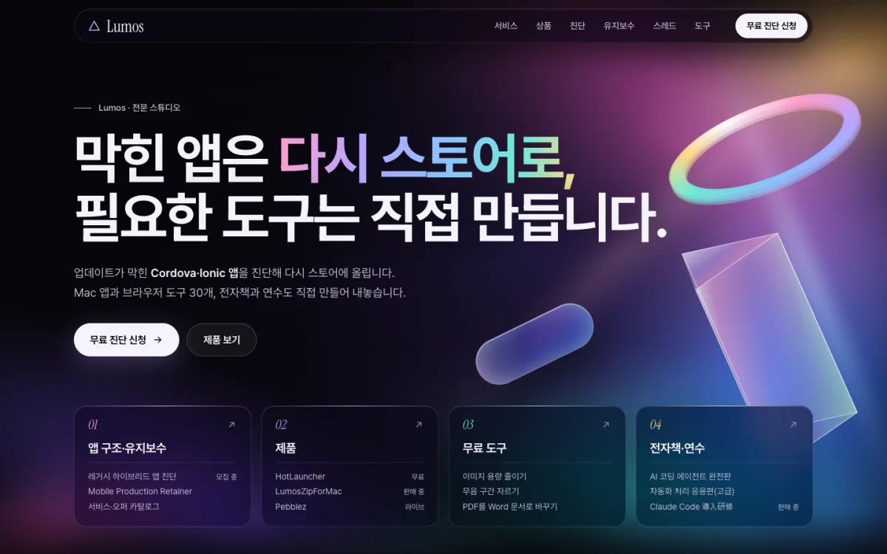
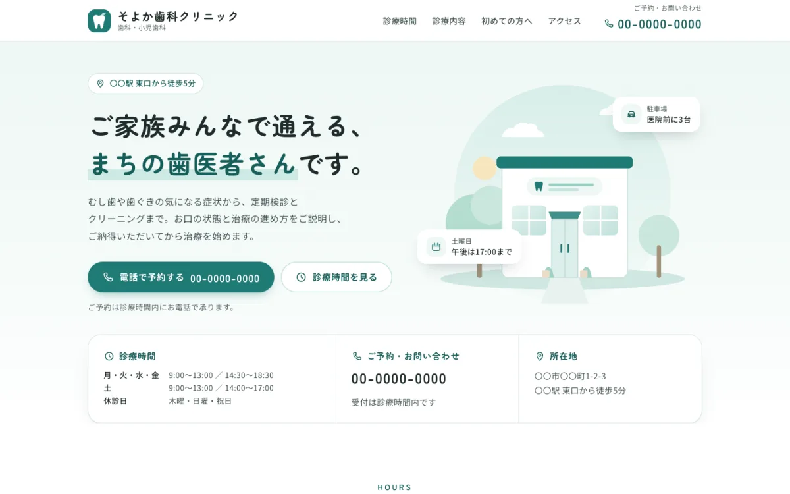
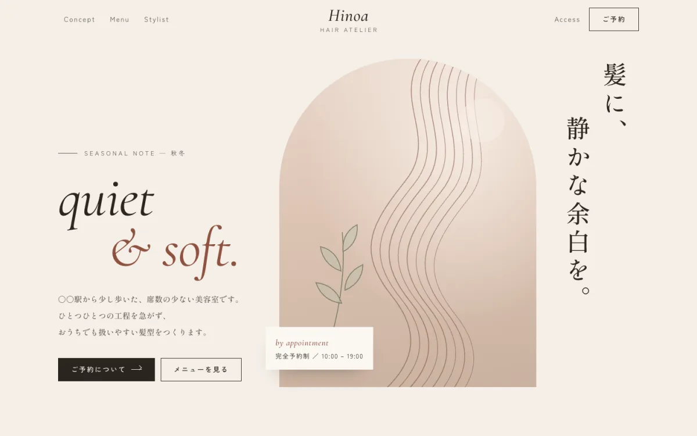
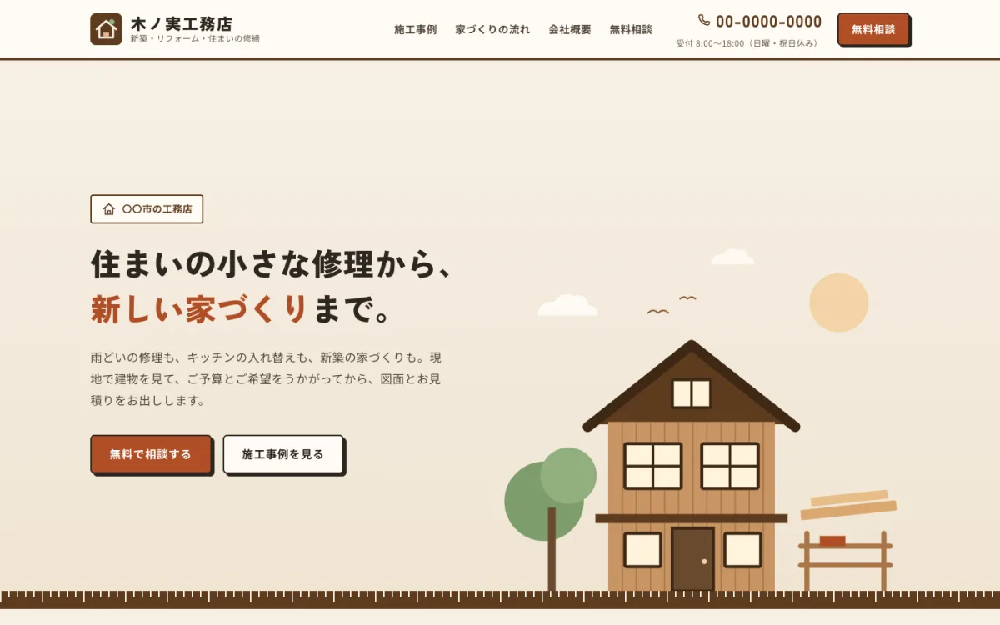
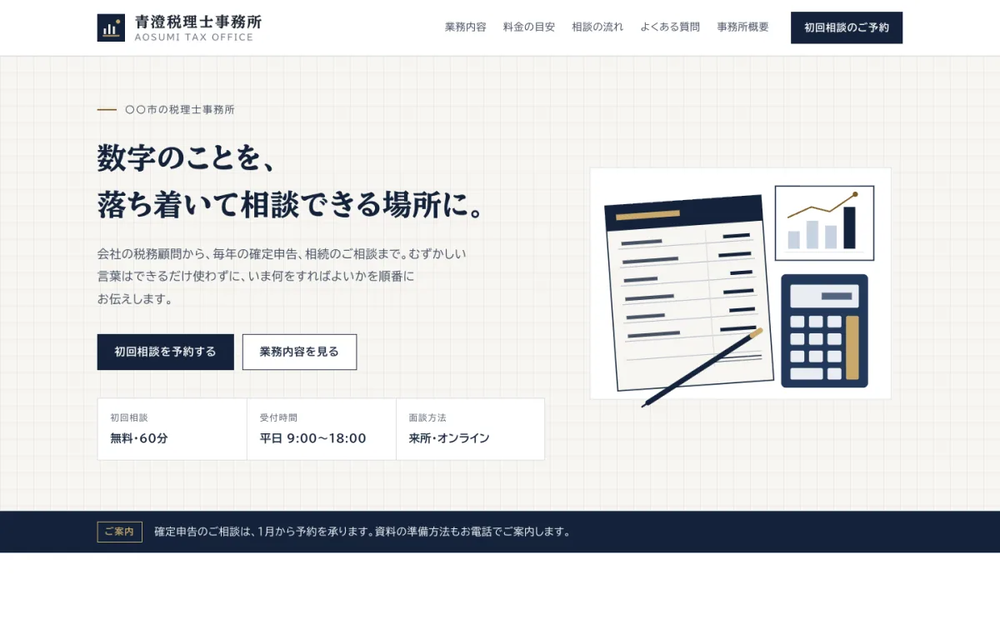

Aurora Glass
어두운 배경에 오로라처럼 번지는 빛과 반투명 유리 카드를 겹친 스타일입니다. 앱이나 SaaS처럼 기술 제품을 차분하게 소개하는 페이지에 어울립니다.
Lumos · 전문 스튜디오
아래 디자인 샘플 가운데 스타일을 고르시면, 그 스타일로 홈페이지나 랜딩페이지를 만들어 드립니다. 샘플은 모두 직접 열어 볼 수 있는 페이지입니다.
원페이지와 10페이지 이하 사이트를 만듭니다. 유료이며 가격은 협의해 정합니다.
같은 내용을 다섯 가지 스타일로 만든 페이지입니다. 썸네일은 1440px 화면에서 본 첫 화면입니다.

어두운 배경에 오로라처럼 번지는 빛과 반투명 유리 카드를 겹친 스타일입니다. 앱이나 SaaS처럼 기술 제품을 차분하게 소개하는 페이지에 어울립니다.

검은 바탕에 라임색 포인트를 두고, 크기가 다른 칸에 내용을 나눠 담는 벤토 그리드 스타일입니다. 제품이나 기능이 여러 개라 한 화면에서 훑어보게 하고 싶을 때 어울립니다.

밝은 바탕에 옅은 파스텔 빛과 흰 유리 카드를 쓴 라이트 스타일입니다. 상담, 교육, 생활 서비스처럼 밝고 깨끗한 인상이 필요한 페이지에 어울립니다.

모눈 배경과 고정폭 글꼴, 터미널 창을 큰 제목과 함께 쓴 스타일입니다. 개발 도구나 API 문서처럼 개발자가 읽는 페이지에 어울립니다.

프리즘 빛깔 그라데이션 배경에 유리 질감의 입체 도형을 올린 스타일입니다. 스튜디오나 브랜드 소개처럼 첫 화면의 인상이 중요한 페이지에 어울립니다.
가상의 가게와 사무소로 만든 일본어 원페이지입니다. 이름, 주소, 전화번호, 가격은 모두 예시입니다.




위 샘플과 이 페이지에서 확인한 것만 적었습니다.
만들 페이지와 마음에 드는 샘플을 메일로 알려 주십시오.
샘플 가운데 하나를 고릅니다.
고른 스타일에 받은 내용을 넣어 초안을 보여 드립니다.
초안을 보고 고칠 곳을 알려 주시면 반영합니다.
완성한 HTML·CSS 파일을 전달합니다.
두 가지 규모로 만듭니다. 모두 유료이며, 가격과 일정은 만들 내용을 듣고 협의해 정합니다.
한 페이지로 된 소개 페이지나 랜딩페이지입니다.
유료 · 가격 협의
10페이지 이하로 된 가게·사무소·회사 사이트입니다.
유료 · 가격 협의
제작 문의는 tolaria@naver.com으로 보내 주십시오. 마음에 드는 샘플 이름과 만들 페이지를 적어 주시면 견적을 보내 드립니다.